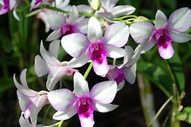
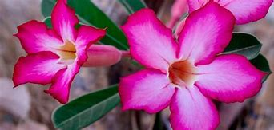
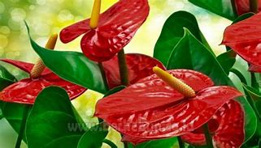
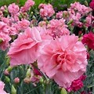
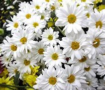
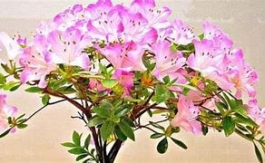

Promosi Bunga
pengertian bunga

Bunga atau kembang adalah alat reproduksi seksual pada tumbuhan berbunga. Pada bunga terdapat organ reproduksi, yaitu benang sari dan putik. Bunga bisa muncul secara tunggal maupun bersama-sama dalam satu rangkaian. Bunga yang muncul secara bersama-sama disebut sebagai bunga majemuk atau inflorescence.
1.Bunga Anggrek
Anggrek merupakan salah satu jenis tanaman hias yang memiliki keindahan yang luar biasa. Tanaman ini memiliki beragam bentuk dan warna yang membuatnya begitu menarik bagi pecinta kebun dan kolektor tanaman. Anggrek juga menjadi salah satu tanaman yang paling populer di dunia, dengan ribuan spesies yang tersebar di berbagai belahan dunia. Dalam artikel ini, kita akan mengupas tuntas tentang pengertian anggrek, termasuk asal usul, karakteristik, dan jenis-jenis anggrek yang paling populer. Anggrek merupakan tanaman anggota suku Orchidaceae yang terkenal dengan keindahan bunganya. Tanaman ini berasal dari berbagai belahan dunia, mulai dari daerah tropis hingga daerah beriklim sedang. Anggrek termasuk dalam kelompok tumbuhan epifit, yang berarti mereka tumbuh di atas permukaan tanah atau di atas batang pohon sebagai tempat tumbuhnya. Namun, ada juga anggrek yang tumbuh di tanah atau batang tanaman lain sebagai parasit. Salah satu karakteristik yang paling menarik dari anggrek adalah bunganya yang beraneka ragam bentuk dan warna. Bunga anggrek memiliki bentuk yang unik dan indah, dengan kelopak bunga yang seringkali berbentuk seperti sayap kupu-kupu atau bentuk lain yang tidak biasa. Warna bunga anggrek juga sangat beragam, mulai dari putih, kuning, merah, hingga ungu. Beberapa anggrek bahkan memiliki pola atau corak yang menarik di dalam bunganya. Anggrek juga memiliki berbagai jenis daun yang berbeda-beda. Beberapa anggrek memiliki daun yang berbentuk seperti pita atau daun yang panjang dan ramping, sedangkan yang lain memiliki daun yang lebar dan tebal. Daun anggrek juga seringkali berwarna hijau cerah, memberikan kesan segar dan hidup pada tanaman ini.
2.Bunga Adenium
Adenium adalah tanaman hias yang memiliki batang besar yang menyerupai umbi. Salah satu ciri khasnya adalah akarnya yang dapat membesar seperti umbi juga. Bentuk daun Adenium bervariasi, ada yang lonjong, ada yang runcing, ada yang kecil, dan ada yang besar.
3.Bunga Anthurium
Secara umum anthurium dibedakan menjadi dua yaitu jenis anthurium daun dan jenis anthurium bunga. Anthurium daun memiliki daya pikat terutama dari bentuk-bentuk daunya yang istimewa. Sedangkan anthurium bunga lebih menonjolkan keragaman bunga baik hasil hibrid maupun spesies. Biasanya jenis anthurium bunga dijadikan untuk bunga potong.
4.Bunga Anyelir
Bunga anyelir, atau yang secara ilmiah dikenal sebagai Dianthus, adalah simbol dari cinta, kekaguman, dan keistimewaan. Bunga ini sering disebut sebagai “Bunga dari Tuhan” dan terkenal dengan kelopak bunganya yang bergerigi serta wanginya yang khas. Bunga anyelir banyak dibudidayakan dan digunakan dalam industri bunga karena keindahannya12.
4.Bunga aster
Bunga aster termasuk ke dalam tanaman herba atau rumput. Tumbuhan ini dapat bertahan cukup lama, yaitu hingga lebih dari 2 tahun. Aster sangat digemari karena bentuknya yang indah. Bunga ini juga telah dibudidayakan hingga 180 spesies. Di Indonesia, tanaman aster banyak dibudidayakan oleh petani di Pacet. Suhu dan lingkungan daerah Pacet sesuai untuk budidaya aster. Selain itu, permintaan pasar akan bunga aster di Indonesia juga cukup tinggi. Dalam bahasa Inggris, bunga ini disebut sebagai bunga daisy. Penamaannya berasal dari kata dalam bahasa Yunani Kuno yang artinya “bintang”. Dinamakan demikian karena bentuk bunga aster yang menyerupai bintang. Ada banyak variasi hybrid dan spesies bunga aster saat ini, sebagian besar dimanfaatkan sebagai tanaman hias karena bentuknya yang indah dan warna-warninya yang sangat memukau.
4.Bunga Azalea
Saliyah atau Azalea adalah jenis tanaman berbunga dari keluarga Ericaceae dan genus Rhododendron yang tumbuh di wilayah beriklim sedang. Azalea tumbuh di sebagian besar Asia Timur dan Amerika Utara. Bunganya berkembang pada awal musim panas di bulan Juni dan pada musim gugur menggugurkan dedaunannya, terutama pada spesies Amerika.

Follow Me